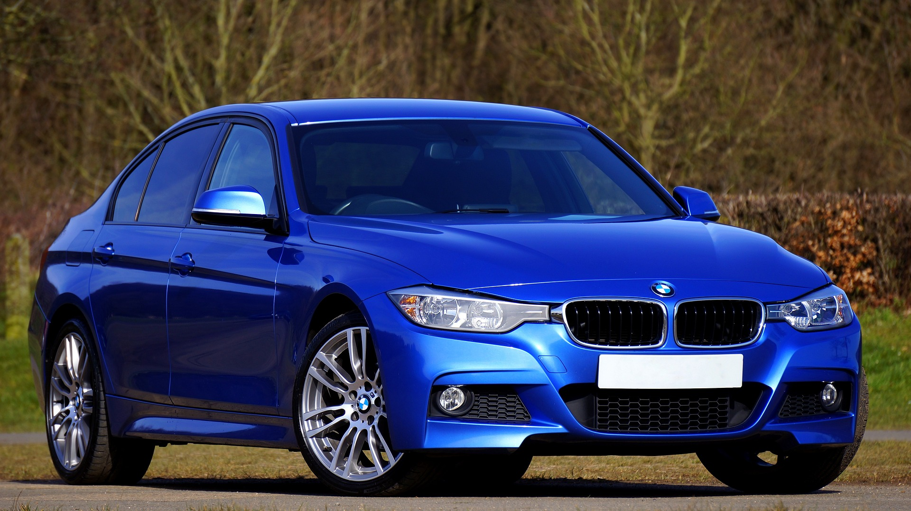

BMW

BMW (z niem. Bayerische Motoren Werke, czyli Bawarskie Zakłady Silnikowe) od ponad 90 lat niezmiennie sygnuje swoje pojazdy znanym każdemu logiem. Okrągła, biało-niebieska tarcza, czarna obwódka i napis „BMW” do dziś oznacza, że mamy do czynienia z prawdziwymi perełkami motoryzacji. Jednak skąd taki pomysł na loga aut z Bawarii?

Istnieją dwie teorie na ten temat. Pierwsza (bardziej znana) mówi, że logotyp symbolizuje kręcące się śmigło samolotu. Sensowne wytłumaczenie, jeśli weźmiemy pod uwagę, że firma zaczynała jako Rapp-Motorenwerke i pierwotnie produkowała silniki samolotowe. Wedle drugiej teorii biaro-niebieska tarcza symbolizuje flagę Bawarii, która w oryginale jest szachownicą właśnie w tych kolorach. Jednak ta teza jest nieco kontrowersyjna. Dlaczego?
Ponieważ gdy logo BMW powstało, niemiecka ustawa o znakach towarowych zabraniała lokowania w nich herbów czy innych symboli narodowych. Dlatego też władze bawarskiej firmy utrzymują, że dwukolorowa tarcza imituje śmigło samolotu, a podobieństwo do flagi Bawarii jest „całkowicie przypadkowe”.